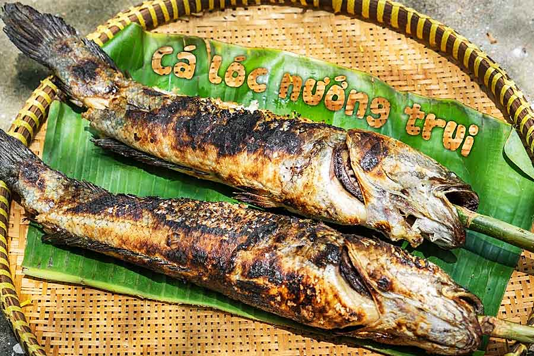

: 23/3/2023
Được thiên nhiên ưu đãi, miền Tây rất trù phú với vô vàn những loài cá nước ngọt, phải nói rằng đây là nơi cá đầy sông, tôm đầy ruộng. Phổ biến nhất trong các loại cá ở miền Tây, phải kể tới cá lóc. Cá lóc là loại cá nước ngọt rất phổ biến ở Việt Nam, cũng được người dân Việt Nam ưa chuộng và sử dụng trong bữa ăn hàng ngày. Có rất nhiều món ăn với cá lóc ngon, nhưng để trải nghiệm hương vị trọn vẹn nhất của cá lóc thì chỉ có duy nhất món cá lóc nướng trui.
Nếu ai đã từng đặt chân đến miền Tây sông nước, thì không thể không biết đến món cá lóc nướng trui, món ăn dân dã mà vô cùng hấp dẫn. Tuy rằng chỉ là món ăn bình dị, nhưng cá lóc nướng trui rất được ưa chuộng không chỉ với người dân miền Tây mà với tất cả những ai đã từng đến với mảnh đất này, bởi thế mới có câu: Bắt con cá lóc nướng trui – Làm mâm rượu trắng đãi người bạn xa.

Người dân miền Tây xưa nay đã nổi tiếng là thân thiện, hiếu khách, bất cứ ai đến đây cũng trở nên yêu mảnh đất và con người nơi đây. Cứ mỗi dịp đầu tháng giêng hàng năm, khi mùa thu hoạch cá đến, người dân lại tát mương để bắt những con cá theo dòng nước bơi từ sông vào. Nếu bạn đến Miền Tây vào dịp này, bạn hoàn toàn có thể tham gia tát mương bắt cá vô cùng thích thú và sôi động, thành quả của buổi tát mương là những con cá tươi sống, và việc của bạn chính là chế biến những con cá lóc sao cho chúng trở nên ngon lành nhất.
Cá lóc nướng trui là món ăn dân dã, chính vì thế mà cách chế biến nó cũng rất đơn giản. Tuy vậy, để có món Cá lóc nướng trui ngon, người đầu bếp cần phải có sự tinh tế, cũng như sự khéo léo nhất định. Cá lóc được bắt từ sông lên vô cùng tươi sống, không cần sơ chế cầu kỳ, không mổ bụng, không đánh vảy, thậm chí không cần ướp gia vị. Điều cần thiết là một xiên tre sạch, xiên thẳng từ miệng cá đến hết chiều dài của cá. Tiếp theo cắm thanh tre đã gắn cá xuống đất hoặc có thể kê bằng 2 viên đá hoặc gạch, rồi phủ rơm khô lên trên, lượng rơm phủ lên cũng phải thật vừa, sao cho khi rơm cháy hết thì cá cũng vừa chín. Như vậy là đã chuẩn bị xong cho việc nướng cá lóc.
Tuy đơn giản là vậy, nhưng đó là ngẫu hứng của người dân nơi đây, cùng nhau quay quần nhắm rượu bên mâm cá nướng sau một buổi làm việc vất vả. Cá lóc nướng xong có mùi thơm rất hấp dẫn, mùi thơm của cá lóc, mùi thơm của rơm, của đồng quê không lẫn đi đâu được. Cá nướng đơn giản nhưng người châm bếp phải thật khéo léo, vì rơm cháy quá lâu sẽ làm cá khét, thịt cá khô mất đi vị ngon ngọt của cá; hoặc nếu không đủ lửa thì cá sẽ không chín.

Đối với những chú cá lóc cỡ lớn khoảng 1 cân trở lên, thì việc nướng cá có đôi chút khác biệt. Vì cá lớn rất dễ xảy ra trường hợp, bên ngoài cá chín, bên trong vẫn sống. Để giải quyết vấn đề này, người dân nơi đây đã nghĩ ra cách đổ nước vào trong bụng cá, sau đó dốc ngược miệng cá lên trên rồi mới châm lửa nướng. Lửa cháy bên ngoài không những làm bên ngoài chín mà nước bên trong cá sẽ sôi lên và làm chín phần bên trong cá lóc. Quả thật đây chính là sự sáng tạo đến bất ngờ trong đời sống và lao động của người dân miền Tây.

Sau khi cá đã chín, đến giai đoạn thưởng thức món cá lóc nướng trui thơm ngon. Phủi sạch tro rơm trên thân cá, rồi cho cá vào mâm hoặc mẹt lớn, rẽ thân cá làm đôi theo dọc sống lưng cá. Từ đây mùi cá nướng phả vào mặt hương thơm vô cùng, một mùi thơm đặc trưng, phảng phất mùi khói rơm đắng đắng. Thịt cá nướng thơm ngon, đậm đà, chấm với nước mắm chua cay thì quả thật không thể cưỡng lại.
Hiện nay, món cá lóc nướng trui đã trở nên phổ biến với tất cả mọi người khi mà những quán ăn hương vị miền Tây mọc lên khắp nơi. Nếu ở Sóc Trăng thì không khó để tìm ra món cá lóc nướng trui, bạn chỉ cần đến với Sóc Trăng là có thể thưởng thức món ăn thơm ngon này. Điều đặc biệt là món cá lóc ở đây do chính người dân miền Tây chế biến, nên hương vị sẽ giống với nguyên bản nhất.
Cá lóc nướng trui là món ăn dân dã, giản dị vì để làm ra nó là những nguyên liệu đơn giản, đời thường: một con cá lóc, ít rau sống, gia vị đơn giản,…Mặc dù đơn giản là vậy, nhưng món ăn này chính là hương vị của đồng quê, của sông nước, của con người miền Tây. Đôi khi chỉ cần quay quần bên mâm cá lóc nướng, nhâm nhi chén rượu, râm ran câu chuyện đời thường là đã vui lắm rồi. (Nguồn:Justly.vn)
Address: Soc Trang
Phone: 84+865510677
Email: mekongescape83@gmail.com


Copyright by MeKong Escape - © 2023